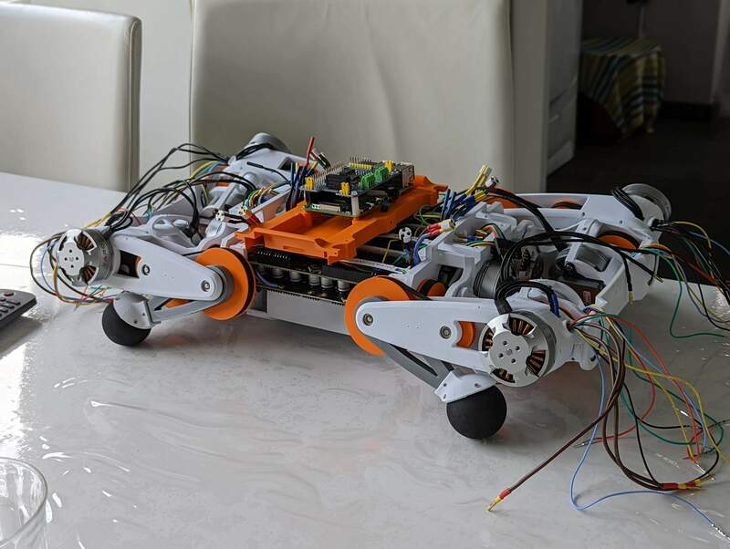
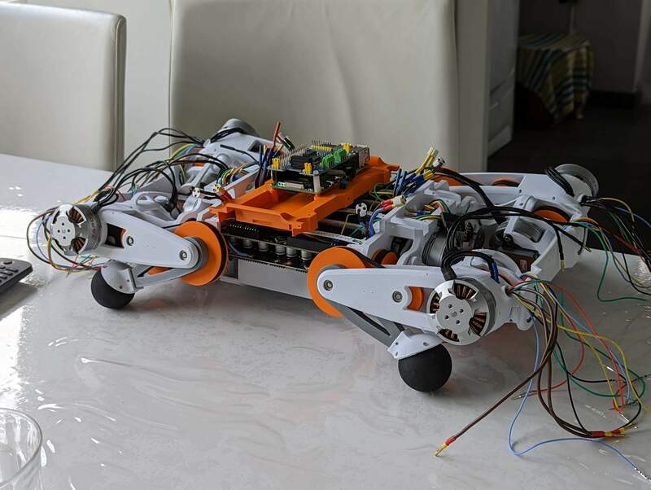

Projects
MSc Thesis: Co-design of Quadruped Using Reinforcement Learning (in progress)
During my master’s studies and personal projects building robots, I encountered the challenges of designing robots that perform effectively in real-world scenarios. These experiences inspired me to focus my self-proposed thesis on learning-based co-design. Co-design is a promising approach that optimizes a robot’s physical design and motion simultaneously, simplifying the process of creating high-performance robotic systems.
In my thesis, I applied co-design principles to a quadruped robot, working across several key areas to bridge hardware and software:
- Designing the Robot:
- Defined platform requirements with a focus on modularity, torque-controlled motors, and cost-efficiency.
- Selected electronic and mechanical components, negotiating discounts with suppliers.
- Designed the robot with modularity and manufacturability in mind to easily test various co-optimized designs.
- Created a comprehensive CAD model in SolidWorks and prototyped subcomponents such as the legs, compute module, and body layout.
- Developed a modular design space (details to be announced soon).
- Building the Robot:
- Fabricated all parts using my Creality CR-10 3D printer.
- Hand-crafted wiring with soldering tools and heat guns.
- Tested electronics using professional-grade equipment, including a power supply, multimeter, and oscilloscope.
- Developing Low-Level Software:
- Enhanced C++ packages to integrate with my custom software stack for I²C communication with the MPU6050 IMU in DMP mode, reducing computation on the NVIDIA Jetson platform.
- Built asynchronous Python-based bi-directional CAN communication for Xiaomi Cybergears motors, translating technical documentation from a Chinese manual.
- Automated the initialization of the IMU and PEAK CAN devices using Linux services.
- Configured NVIDIA JetPack with all necessary drivers and packages.
- Simulating the Robot:
- Exported the robot’s CAD design from SolidWorks to URDF and converted it to MJCF for simulation.
- Created a realistic robot model by measuring part weights and consulting motor datasheets.
- Developed functions to easily select designs within the modular design space, enabling automated model updates.
- Creating a Reinforcement Learning-Based Co-Design Algorithm:
- Built a parallelizable RL environment using MuJoCo (MJX) and Brax.
- Trained locomotion policies using Brax’s JAX-based PPO algorithm for flat and rough terrains, exploring gaits such as trotting and pronking.
- Designed a co-design algorithm leveraging RL principles (further details to be announced).
- Setting Up RL Training Infrastructure:
- Streamlined the training process with an optimized RL training pipeline.
- Created configuration files for efficient training and evaluation workflows.
- Automated tools for monitoring training progress through real-time plotting.
- Transferring Policies to the Real Robot:
- Improved sim-to-real transfer using domain randomization, sensor noise injection, and disturbance modeling.
- Conducted sim-to-sim policy transfers to test locomotion via a gamepad.
- Built scripts to convert trained JAX models to PyTorch and ONNX formats for use in simulation and on the real robot.
- Leveraged TensorRT and PyCUDA to enable efficient neural network inference on the NVIDIA Jetson platform.
Through this project, I combined my passion for designing robots with my interest in learning-based optimization, resulting in a modular platform that integrates co-optimized designs with real-world deployment. My approach exemplifies how a synergy between hardware and AI algorithms can push the boundaries of robotic performance in complex environments.

Hobby Quadruped Project
This personal project allowed me to explore a smaller, more affordable quadruped design from scratch. Through this process, I gained invaluable experience across all major aspects of robotics engineering.
- Mechanical Design:
- Constructed a durable structure with quasi-direct drive, optimizing for backdrivability.
- Electrical Integration:
- Incorporated FOC motor drivers and BLDC motors with CAN-based communication for efficient control.
- Designed with safety in mind, adding inrush current protection and fuses.
- Software Development:
- Programmed C++ code for inverse kinematics and trajectory generation.
- Operated on Ubuntu and ROS 2 with Bluetooth gamepad control, using MuJoCo for simulations.
 
